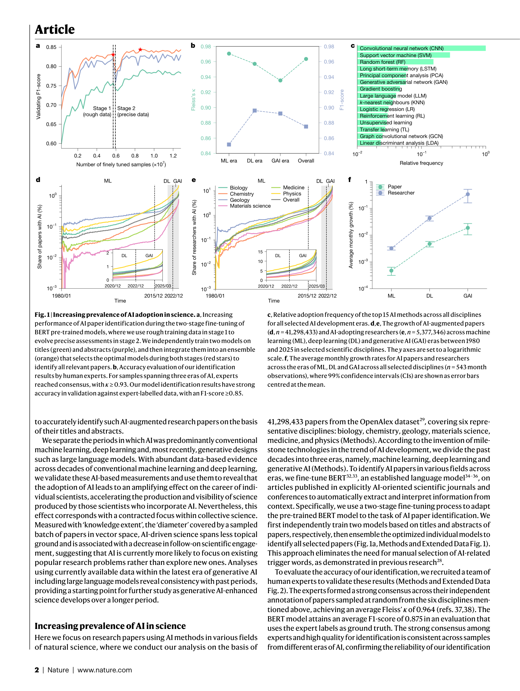
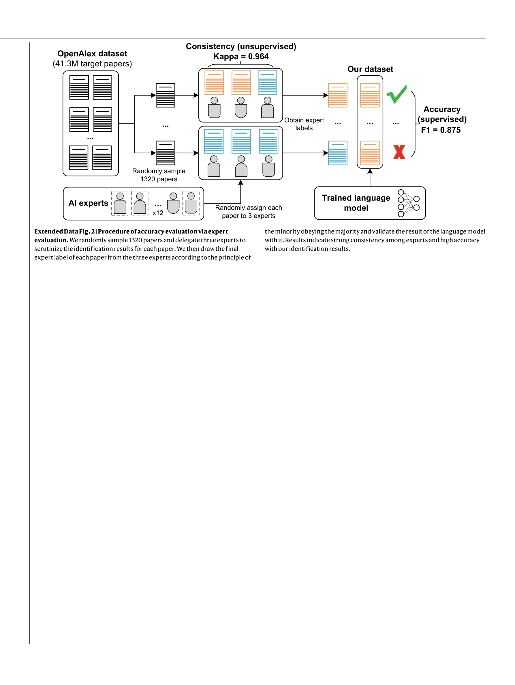
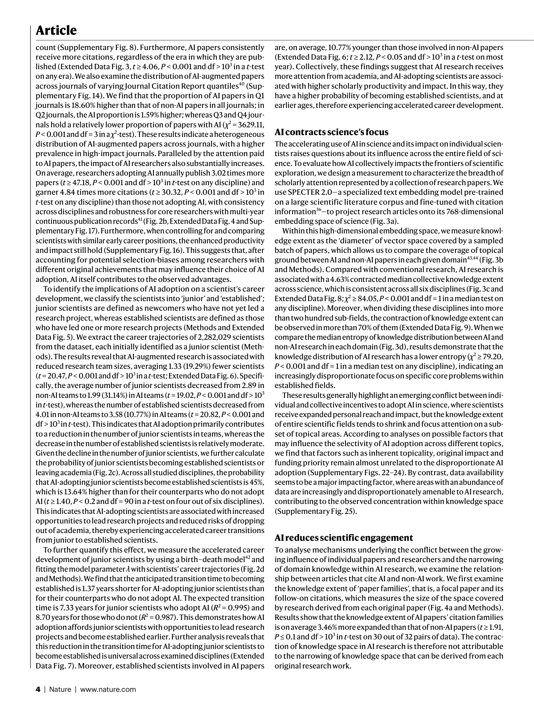
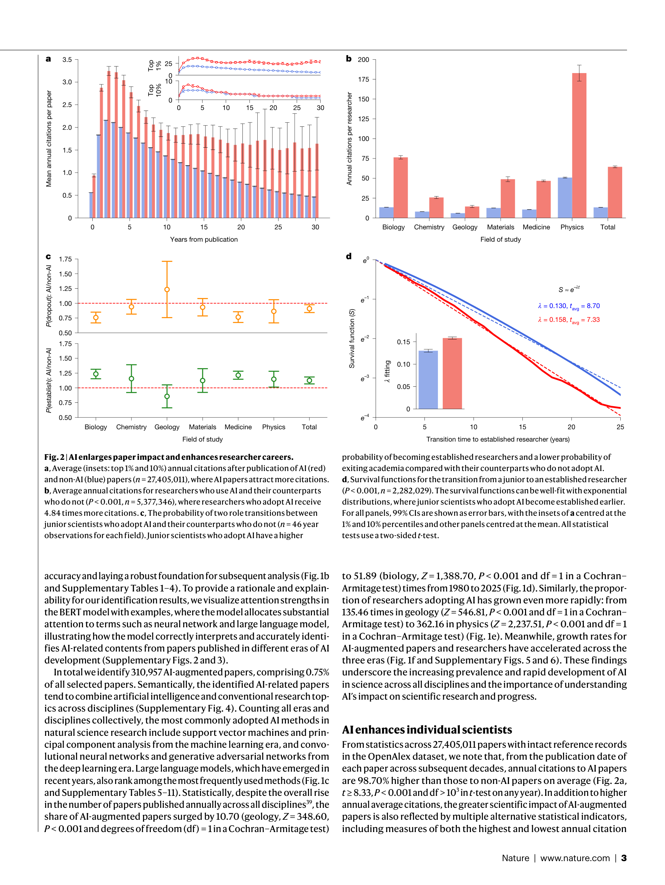

Figure 1

Figure 2
AI 도구의 과학 연구 도입이 개별 과학자에게는 생산성과 영향력을 확대하지만, 집단적 과학 탐구의 범위는 축소시킨다는 역설(paradox)을 4,130만 편의 자연과학 논문 분석을 통해 실증적으로 입증한 대규모 계량서지학(scientometrics) 연구이다. AI를 활용하는 과학자는 3.02배 더 많은 논문을 발표하고 4.84배 더 많은 인용을 받으며, 연구 리더가 되기까지 1.37년 더 빠르지만, AI 연구 전체의 지식 범위(knowledge extent)는 4.63% 축소되고 후속 연구 간 상호작용은 22% 감소한다.

Figure 3
AI가 과학 발견을 가속화하고 있으며 AI 관련 노벨상까지 수여되는 시대에, AI 도구가 개별 과학자와 과학 전체에 미치는 영향에 대한 대규모 실증 측정은 부재했다. 기존 연구는 AI의 혜택이나 인구학적 격차에 국한되어 있었고, AI 도입이 과학 탐구의 전체적 성격에 미치는 동태적 영향은 거의 알려지지 않았다. 특히 개인적 이익과 집단적 이익 사이의 잠재적 충돌 가능성이 제기되었으나 검증되지 않았다.

Figure 4
Nature 게재에 걸맞은 대규모 실증 연구로, 과학 정책에 직접적 시사점을 제공하는 중요한 발견을 담고 있다. "AI가 기존 분야를 자동화하되 새로운 분야를 탐구하지 않는다"는 핵심 메시지는 현재 AI for Science 열풍에 대한 시의적절한 경고이다. 방법론적으로 BERT 기반 논문 식별, SPECTER 2.0 기반 지식 범위 측정, birth-death 모델 기반 경력 분석 등 다층적 접근이 설득력 있으나, 인과관계의 한계는 해석에 주의를 요한다. 데이터 풍부 영역으로의 AI 집중 현상은 "가로등 효과(streetlight effect)"의 체계적 버전으로, 과학 탐구의 다양성 유지를 위한 의도적 정책 개입의 필요성을 강하게 시사한다.